The point of intersection of the two curves is easily found to be
(0,0) and (4,16). Then, one can calculate the integral directly:
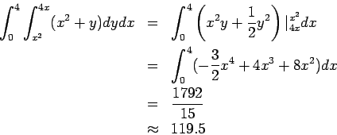
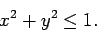
The first step is to solve for z=f(x,y).
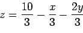
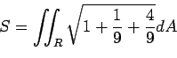
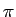
, and so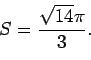
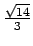
over the unit disk in polar coordinates to arrive at the solution.
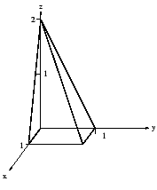
The most direct way to solve this problem
involves integrating in z first from 0 to 2, and then having the inner
double integral correspond to the square shown.
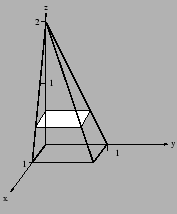
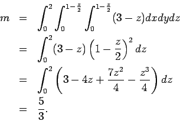
These problems were all straightforward if you knew the different
coordinate systems. It's just a matter of changing variables and setting
the appropriate limits on the integration.
(a) Set up but do not evaluate the first moment Mxy in
spherical
coordinates.
In spherical coordinates, the limits of integration are trivial but
the translation is a bit challenging.
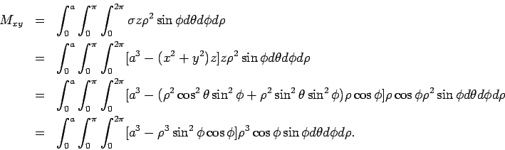
(b) Set up but do not evaluate the first moment Mxy in
cylindrical
coordinates.
For this one, this integrand is easier, but the limits of integration are
tougher. Remember that the equation for a sphere is
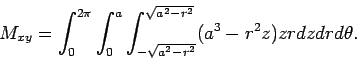
(c) Set up but do not evaluate the first moment Mxy in
rectangular
coordinates.
This one is a natural progression from the first two.
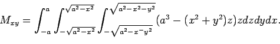

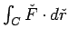
where C is the curve below
A quick check reveals that this vector field has a potential. Knowing
this, you can follow two approaches. One is to find the potential and use
it to compute the path integral. The second approach is to use the fact
that a conservative field is path independent. Thus, you do not have to
follow the path shown. You can integrate from (1,1) to (4,1) in a
straight line, for instance.
Integrating the vector field, one find that
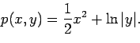
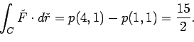